Logos and Diagrams in Inkscape
I am
Daniel Shepsis
- Science & Engineering Class of 2015
- Senior at Rutgers University
- Chemical Engineering Major
- Web Developer for Rutgers
- Likes art
I am going to teach you:
Vector graphics design in Inkscape
Step 1: Vectors graphics
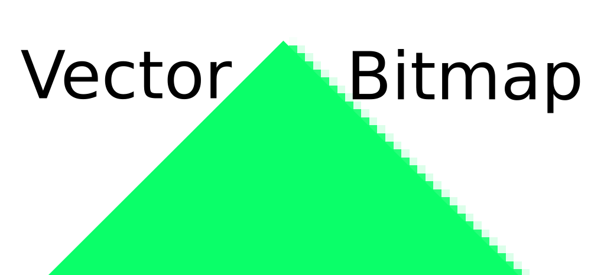Step 2: Making Vector Images
- Standard file format: .SVG (Scalable Vector Graphics)
- Text-file with XML-based formatting.
SVG Example
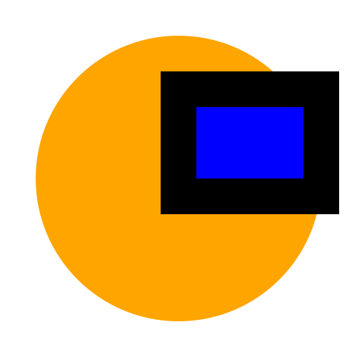<svg width="500" height="500" viewBox="0 0 100 100" xmlns="http://www.w3.org/2000/svg">
<ellipse cx="50" cy="50" rx="40" ry="40"
style="fill:orange;"
/>
<rect x="50" y="25" height="30" width="40"
style="stroke:black; stroke-width: 10; fill: blue;"
/>
</svg>Inkscape: Shapes
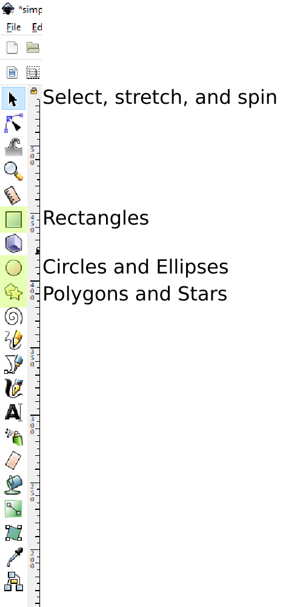Inkscape: Paths
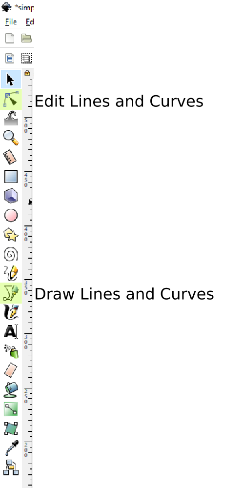Inkscape: Fill and Stroke
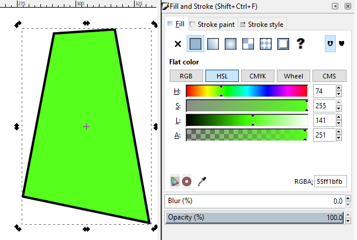Inkscape: Boolean Operations
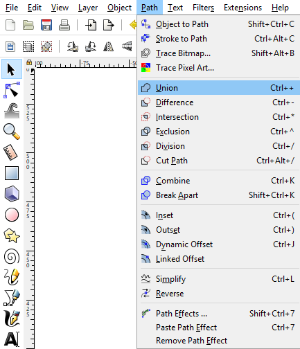Inkscape: Export PNG
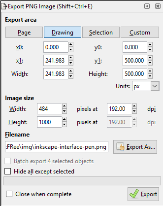Inkscape: Grid
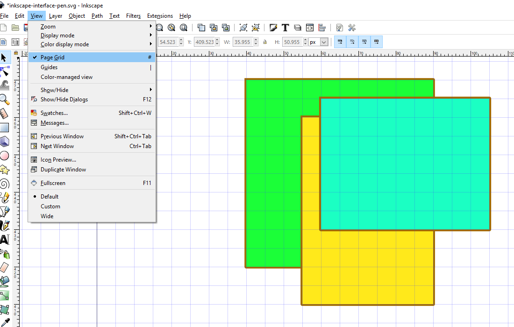Inkscape: Snapping
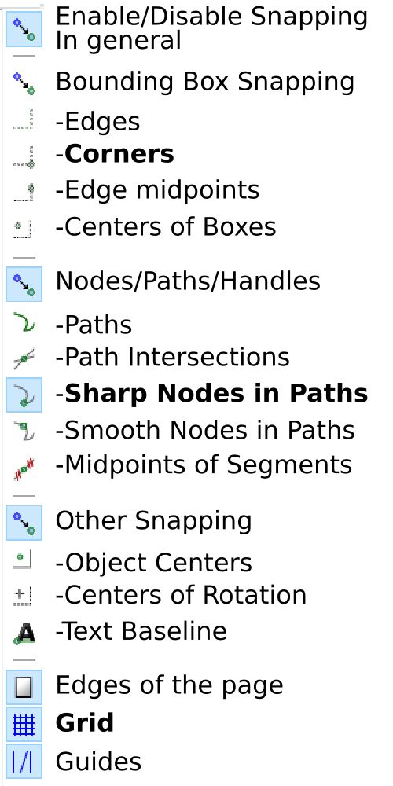Inkscape: Document Properties
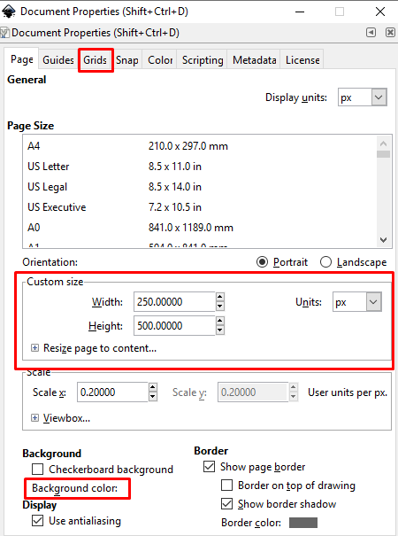Diagrams: Examples
Demo: Example Diagram
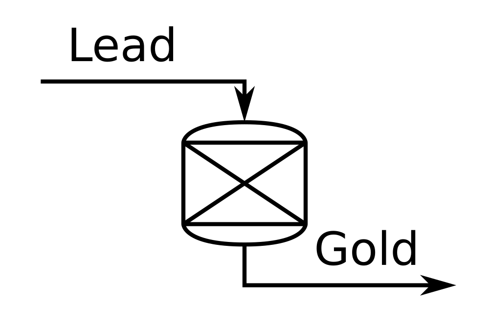Logos: Examples
Demo: Example Logo
Thank you for listening!
Questions and Comments